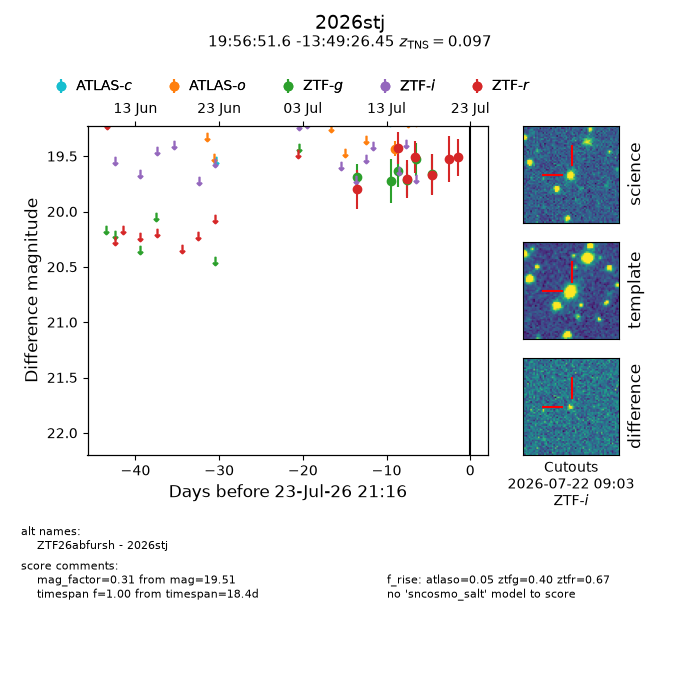
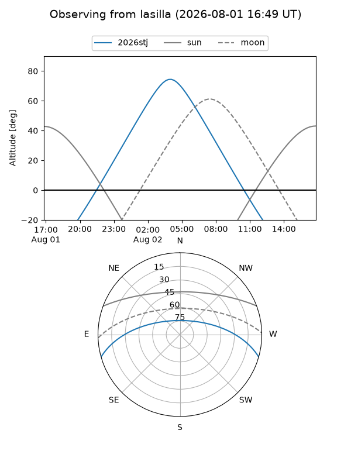
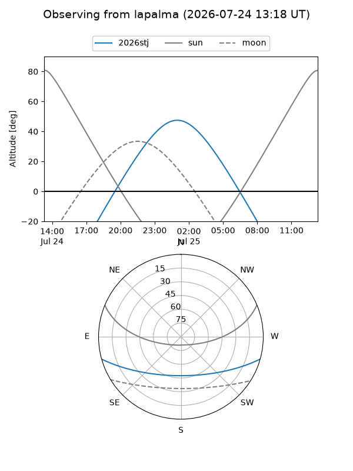
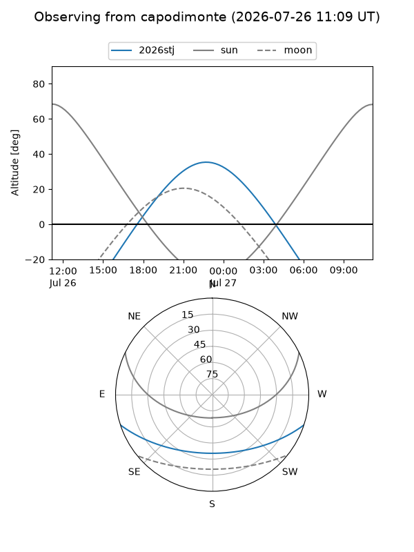

2026stj
Target 2026stj at 2026-07-23 21:19
Aliases and brokers:
FINK-ZTF: ztf.fink-portal.org/ZTF26abfursh
Lasair-ZTF: lasair-ztf.lsst.ac.uk/objects/ZTF26abfursh
ALeRCE-ZTF: alerce.online/object/ZTF26abfursh
YSE-PZ: ziggy.ucolick.org/yse/transient_detail/2026stj
TNS name: wis-tns.org/object/2026stj
Direct TNS query: direct search
alt names
ZTF26abfursh (ztf,fink_ztf)
2026stj (tns,yse)
Coordinates:
equatorial (ra, dec) = 299.2150,-13.82401
equatorial (HMS+DMS) = 19:56:51.61,-13:49:26.45
galactic (l, b) = (27.5384,-20.62877)
Flags:
TNS type: SN Ia
TNS redshift: 0.0970
Photometry:
last atlaso=19.43, ztfg=19.66, ztfr=19.51
2 atlaso, 6 ztfg, 7 ztfr detections
Lightcurve

Visibility



Additional plots